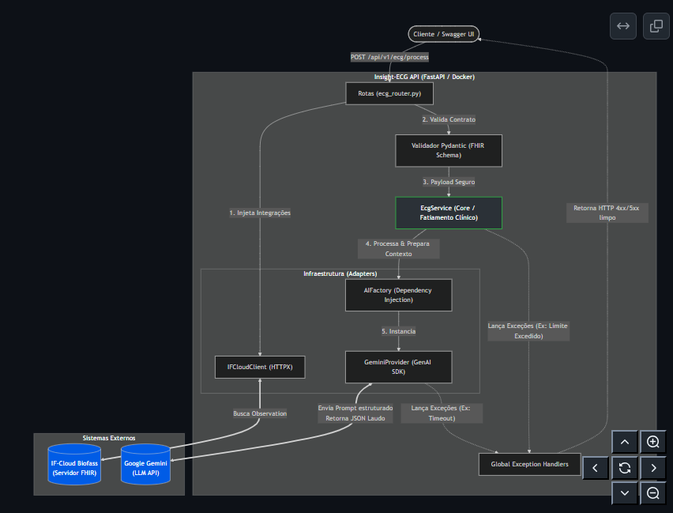
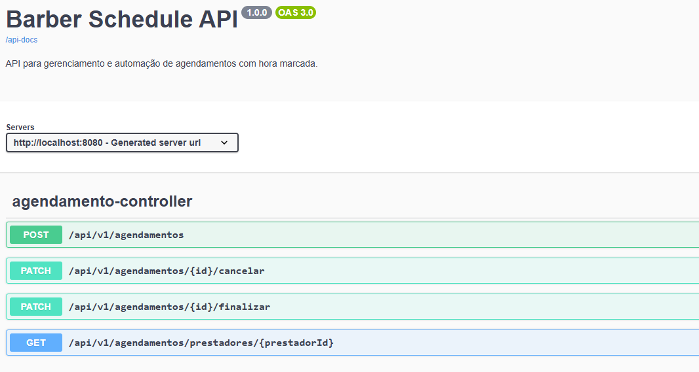
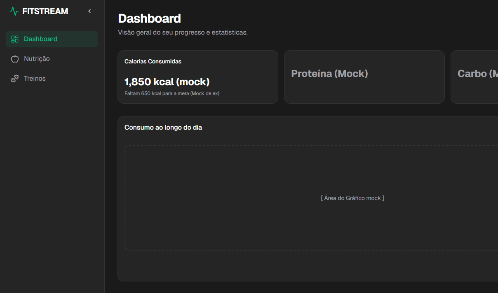

Meus
Projetos

Insight-ECG API
FASTAPI, PYTHON, GEMINI AI, DOCKERProva de Conceito do meu TCC para análise automatizada de biossinais de eletrocardiogramas. Integra LLMs para triagem clínica e auxílio à decisão, estruturada sob Clean Architecture.
- IA & LLM: Integração com Google Gemini para inferência clínica.
- Alta Performance: Framework FastAPI assíncrono.
- Arquitetura: Clean Architecture com Pydantic para validação estrita.

Barber Schedule API
Java 21, Maven, Spring, PostgreSQL, flyway, JUnit, Mockito, Jest, Docker, SWAGGERImplementação de uma API REST para agendamento de serviços em uma barbearia, estruturada sob os princípios da Clean Architecture para garantir um domínio desacoplado e escalável.
- Testes Unitários: Cobertura interna com JUnit e Mockito.
- Testes Funcionais: Bateria de testes de API automatizados utilizando Node.js, Jest e Supertest.

FitStream EM DESENVOLVIMENTO
REACT, TYPESCRIPT, SHADCN, ZUSTAND, TAILWIND, SPRING BOOT, KAFKA, DOCKER, JUNITSistema full-stack de telemetria para gestão de saúde e treinos em tempo real. Transforma o registro de ações diárias em insights visuais imediatos para otimização de rotinas baseada em dados reais.

Crud Pessoas
Spring, Java, SwaggerDesafio técnico que implementa uma API REST para gestão de pessoas e endereços, focada na construção de um CRUD completo